Introduction
After you have installed Torque 3D and experimented with the Toolbox, we recommend that you familiarize yourself with the directory structure of the Torque 3D SDK.
The stock Torque 3D installation includes dozens of folders and thousands of files. It is easy to be overwhelmed at first, but if you spend a little time to browse through the directory hierarchy while reading along with the Directory and Torque 3D Project Tours below, you'll find that everything is organized in a straightforward and intuitive manner. Following the tours, we have also included a brief description of the file types you will encounter while using Torque 3D.
SDK Tour
Folder |
Description |
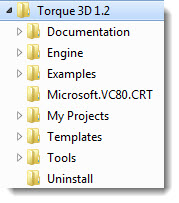 |
This is your Torque 3D root directory. From here, you can navigate through the rest of the SDK. Most importantly, the Torque 3D Toolbox is located in this directory. This is what you will run when you wish to create new projects, edit existing ones, run the editors, and so on.
|
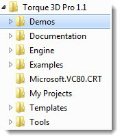 |
The
Demos folder contains sample projects that serve a specific purpose. These projects are meant to show off engine features, and not game play or tutorials.
You can use these projects as a reference on how other developers have prototyped simple demonstrations with Torque 3D tech. |
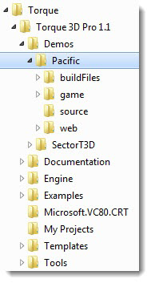 |
A project in the Demos folder acts as a stand alone Torque 3D application. The folder structure and core files are similar to what you may find in other standard projects.
Exactly how a Torque 3D project is structured is covered here. |
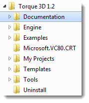 |
The Documentation folder is self-descriptive. In this directory, you can find the Official Documentation for Torque 3D (the documentation you are currently reading). This is also where the Engine Reference docs will be located.
|
 |
A large portion of the Torque 3D SDK is kept in the Engine directory. The libraries, binaries, and source files that allow you to build the Torque 3D engine are located here. |
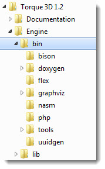 |
The Bin folder contains the binaries (utility programs) used by the engine for compiling. It is not likely that you will need to dive into these folders for your game's development.
Bison, Flex, PHP, and Nasm are code-generating tools designed to aid in compiler development.
The files located in the doxygen folder are used for generating the engine reference documentation.
Graphviz is open source graph visulization software used to represent structural information as diagrams.
|
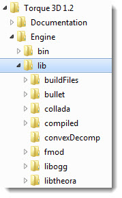 |
The Lib directory contains all of the 3rd party libraries Torque 3D utilizes. Each SDK has a specific function, such as the DirectX 8 rendering for Windows, OpenGL2D3D rendering for cross-platform systems, ljpeg for image loading, and so on. |
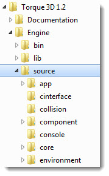 |
This directory contains all of the source code that makes up Torque 3D. The major systems are organized into separate folders, with each sub-directory pointing to more specific modules.
For example:
- Major rendering system code can be found in gfx
- User interface modules are in gui
- Game play code can be found in T3D |
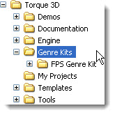 |
Much like the Demos folder, the Examples directory contains stand alone Torque 3D projects. A Torque3D example project provides you with a substantial amount of code and assets, geared toward a specific game play type, which can be used as a starting point for a new game for that genre.
Currently available example is: First Person Shooter (FPS) |
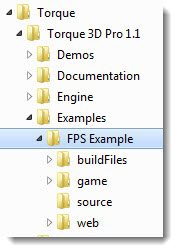 |
As a stand alone Torque 3D application, an Example project folder structure and core files are similar to what you may find in other standard projects.
How a Torque 3D project is structured is covered later here. |
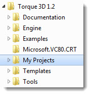 |
The My Projects directory is where new projects are created by default. |
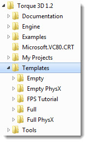 |
Projects in the Template directory are primarily used by the "Project Generator." When you are generating a new project, you can choose between a bare bones application ("Empty") or a project loaded with content and sample code ("Full").
If you modify the directories, by editing or adding content, those changes will take affect when you generate a new project. Those changes will not be reflected in projects that have already been created from a template before the changes were made. |
 |
As a stand alone Torque 3D application, a Template's folder structure and core files are similar to what you may find in other standard projects.
How a Torque 3D project is structured is covered later here. |
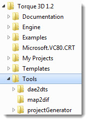 |
The tools that make up the Toolbox's Project Generator and other utilities (such as map2dif) are located in this directory. There should be no need for you to modify anything here. |
Torque 3D Project Tour
Examples and projects created from the Toolbox using the Project Generator share a common directory structure. Folders are named and organized in such a way that it is easy to locate files based on their type and functionality. The following table describes the purpose of the main folders found in each Torque 3D project.
Folder |
Description |
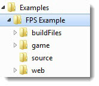 |
The main directory for a project contains four main folders. You can also find the game's binary and DLLs here. |
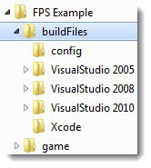 |
Files related to compilers are found in this directory.
-Config contains .conf files that help generate compiler solutions
-VisualStudio 2005 will contain the solution (.sln) and project (.vcproj) files for Microsoft Visual Studio 2005
-VisualStudio 2008 will contain the solution (.sln) and project (.vcproj) files for Microsoft Visual Studio 2008
-Xcode will contain the project (.xcodeproj) files for Apple's XCode |
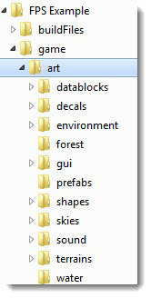 |
The Art directory is dedicated to organizing your game specific assets. Outside of initialization, you will not find scripts in these directories. You should not place any files that are related to functionality, such as game code.
-datablocks contains script files describing the datablocks related to your games art assets.
-decals contains texture and material data for your missions' decals. Decals are images that layer on top of terrain and 3d models.
-environment contains textures and other files used to create environmental effects such as precipitation and foliage.
-forest contains forest file definitions that are used to create foliage and forests in your game.
-gui contains data (.gui) and image files related to your game's interface
-interiors contains the models used for buildings (houses, caves, etc)
-prefabs contains prefab file definitions, prefabs are premade combinations of game models (.dts).
-shapes contains your game's models (.dts, .dsq, collada)
-skies contains the images and configuration files that make up your game's sky boxes
-sound contains your game's sound effects and music (.ogg, .wav, .mp3)
-terrains contains files related to your missions' terrain files, such as terrain blocks (.ter) and heightmaps(images)
-water contains the base materials used to render water blocks |
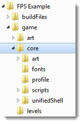 |
The core folder contains files that are commonly used by every Torque 3D project.
-art contains textures, shapes, audio, and GUIs common to all Torque projects.
-fonts is where cached font files (.uft) are generated.
-profile contains scripts responsible for setting global capability strings based on the graphics card vendor and model
-scripts contains the TorqueScript (.cs) files that are responsible for common functionality, such as on screen cursors, system controls, mission loading, etc
-unifiedShell is a special case folder used that allows you to create a unified interface piecing together your menu system. |
 |
This directory contains your game levels (.mis) and the cached lighting files (.ml) |
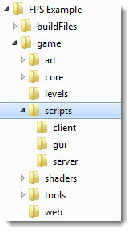 |
The bulk of your game play logic will be stored here in TorqueScript (.cs) format. Torque 3D uses a consistent networked architecture, which means you need to keep your scripts separated based on whether or not the code affects networked code. Understanding Torques client/server architecture is very important, even for single player games. A useful overview can be found here
-client scripts are only important to the local machine, which means nothing here is transmitted over a server. This typically includes game initialization, mission downloading, and input handling.
-server scripts contain a lot more game play code, such as weapons, player creation, player movement, physics, network reaction, and so on.
-gui scripts contain the logic for your interface. This mainly includes the pushing/popping of dialogs, menu transition, input mapping, changing settings, and so on. |
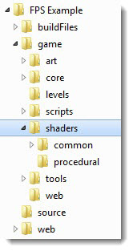 |
If you need to add new shaders (.glsl and .hlsl) or edit existing files, you will work within this directory. Currently, there are two main folders but you can add more to maintain basic organization.
-common contains shaders for specific systems. This includes shaders related to lighting, water, terrain, and more.
-procedural contains shaders generated by the rendering system. |
 |
The files in this directory, mostly scripts and GUIs, are used by the editors to modify your project in real time.
When you are ready to ship your game, you will not actually include this folder. |
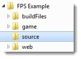 |
The files included in this directory are for deployment to browser platforms like Internet Explorer, Firefox, Chrome and Safari. |
|
Whenever you generate a new project, this directory is populated with two C++ source files. The first is a main.cpp file, which will look familiar to traditional programmers. This is the entry point for your application and contains the "main loop" that controls all game processing. The other file is torqueConfig.h, which contains various preprocessor definitions used to control the development tools that can tailor your executable, such as the application name, enable/disable DSO generation, version number changing, and so on. |
File Descriptions
- .bat - Windows batch files that contain OS commands which can be run to perform tasks. Mostly used in the Torque environment for deleting multiple files at once (.dso, prefs, .uft, etc).
- .c / .cpp - Source code files. These contain the C and C++ language programming instructions which are compiled by developer tools to create the game executable (.exe).
- .cs - TorqueScript files contain most of your programmed game logic and processing using the TorqueScript language.
- ..command - The Mac equivalent of a .bat file.
- console.log - This file is generated by your game whenever you run it. A lot of information about the critical events that occur during your game are written and saved here.
- .dae - COLLADA files which store model information (geometry, textures, nodes) before Torque 3D converts them to its proprietary DTS format.
- .dml - Configuration files used for combining environmental textures, mostly used by precipitation and clouds.
- .dso - TorqueScript (.cs) files that have been compiled into an encrypted format. DSO files are more secure than the original uncompiled .cs files that they are created from.
- .dsq - Proprietary files which store animation information in the format expected by Torque. A .dsq is used in conjunction with.dts files.
- .dts - Proprietary file which stores model information (geometry, textures, nodes) in the format expected by Torque. A .dts is loaded directly into Torque to render 3D models, such as players, items, weapons, and vehicles.
- .dll - Dynamically Linked Library files (DLL) contain code that can be called at runtime by application binary files (.exe and .app) instead of being compiled directly into the binary file itself. This is useful for common libraries, such as OpenGL, OpenAL, Havok, etc.
- .exe / .app - Binary files created by developer tools during the compiling process. Most commonly used to launch your game, a Torque tool, or any other normal computer application.
- .glsl - Contains the configuration information that describes an OpenGL graphics shader.
- .gui - Contains the data used to create a Graphical User Interface (GUI). These files are created using TorqueScript but the special .gui extension allows the GUI Editor to open them for visual modification.
- .h - Header files contain declarations written in the C and C++ languages for classes, structs, variables, and other programming elements, which are compiled by the engine in conjunction with .c and .cpp files to create binary files.
- .hlsl - High Level Shader Language files. Holds the configuration information that describes an MS Windows specific graphics shader.
- .mis - Contains descriptions of the terrain, models, lighting, and environment, and other objects which make up the missions in your game in the format expected by Torque.
- .ogg - Contains audio data in the Ogg Vorbis format for playing sounds and music in your games.
- .png / .jpg / .gif / .dds - Raw image files.
- .ter - Contains terrain data in a format which is understood by, and can be loaded directly into, Torque 3D.
- .torsion - Contains project configuration information which is understood by, and can be loaded into, Torsion which can be used to edit Torque .cs and .gui files. These are Windows only files.
- .uft - These files contain pre-cached font information.
- .wav - Contains audio data in the Waveform format for playing sounds and music in your games.
Conclusion
Understanding the Torque 3D folder and file structure will allow you to easily locate the files you need to work on during the development of your games.
|